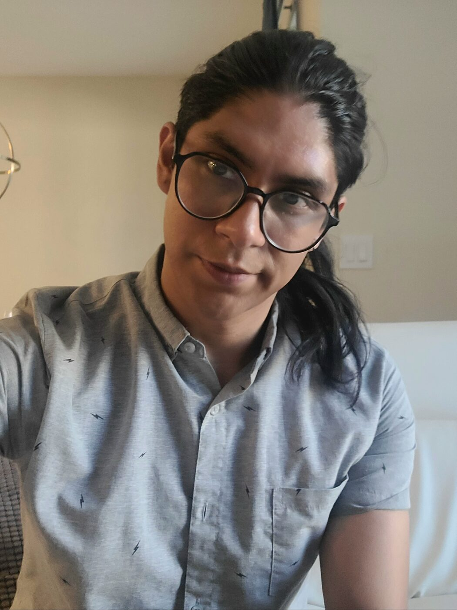
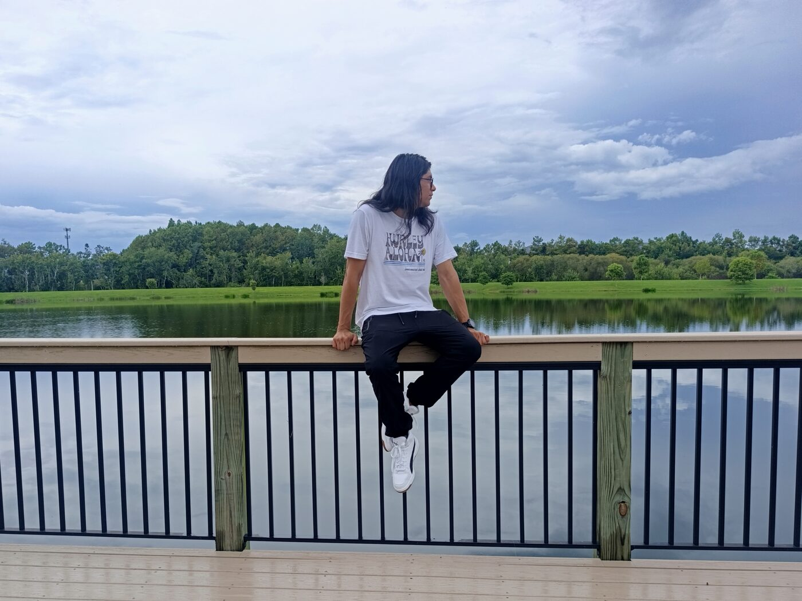
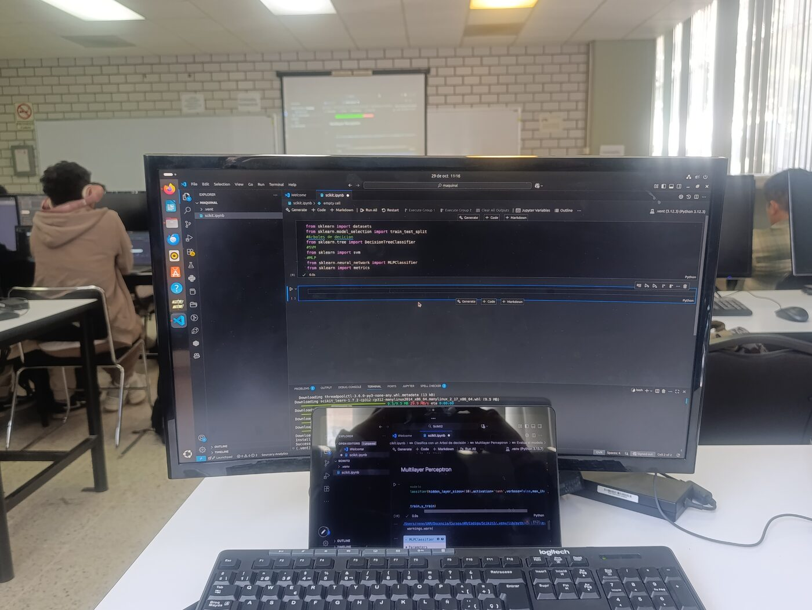
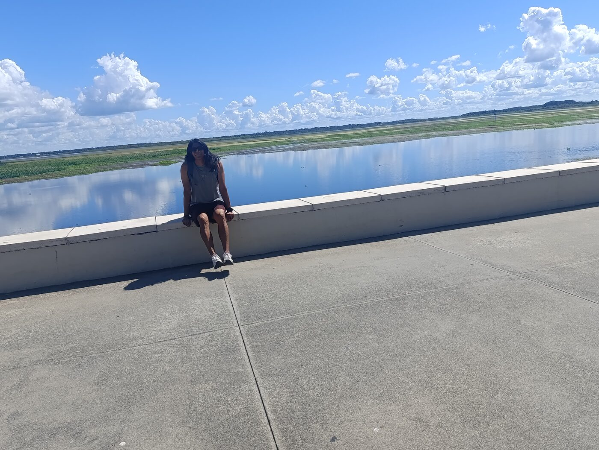
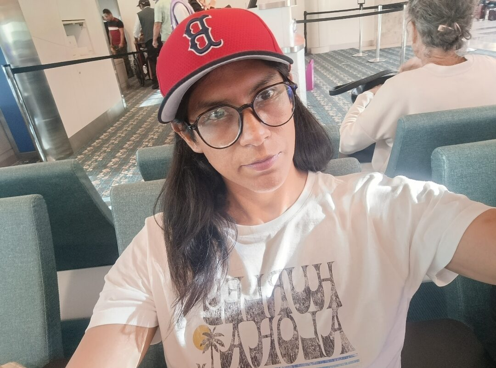
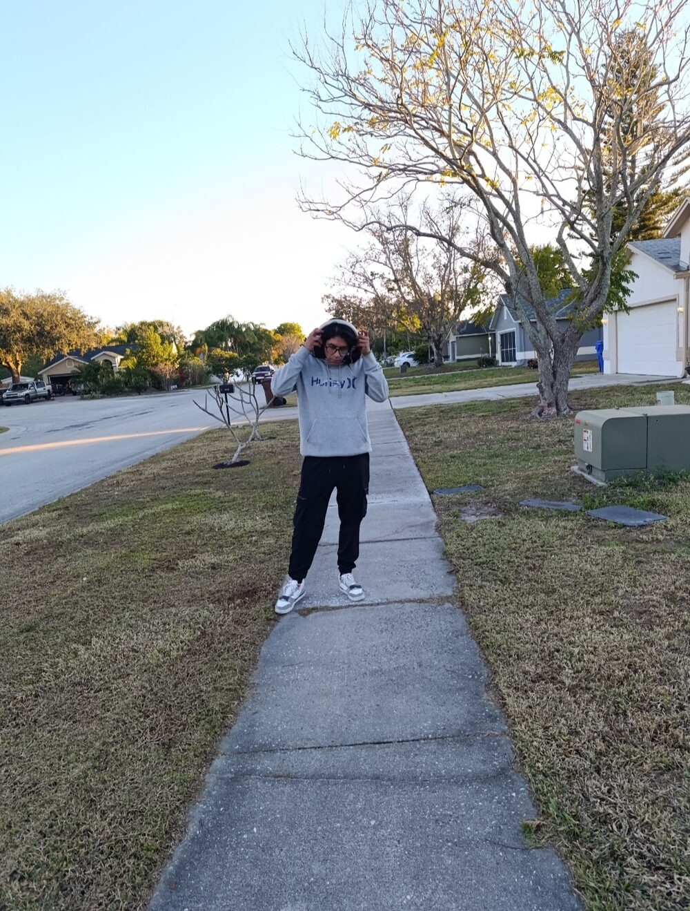

No empecé programando para escribir código. Empecé porque quería entender cómo funciona el mundo.
Crecí en la zona poniente de la Ciudad de México, en Álvaro Obregón. Desde pequeño me fascinaban los videojuegos, las computadoras, las matemáticas y cualquier problema que pareciera imposible de resolver.
Con el tiempo descubrí que la programación era el punto donde todas esas pasiones se encontraban.
Hoy desarrollo software, investigo inteligencia artificial y sigo persiguiendo la misma curiosidad que tenía cuando escribí mi primera línea de código.

Inicios en la programación
Mis primeros programas fueron en lenguaje C: ejercicios clásicos, ciclos, memoria. Aprendí que la máquina no perdona la ambigüedad — y que esa exigencia era exactamente lo que me gustaba.
Poco después llegó Java y, con él, el paradigma orientado a objetos y las estructuras de datos: la idea de que el código no solo se escribe, también se diseña.
UNAM FES Acatlán
Licenciatura en Matemáticas Aplicadas y Computación. Ahí solidifiqué mis bases matemáticas y descubrí la belleza de los números y de los algoritmos.
Fueron años muy significativos en mi desarrollo profesional: entendí que un teorema y un programa se parecen más de lo que parece.
Sigo persiguiendo la misma curiosidad que tenía cuando escribí mi primera línea de código_
UAM Iztapalapa
Licenciatura en Computación: una especialización de todo lo anterior. Profundicé en inteligencia artificial, teoría de grafos y algoritmia avanzada, ingeniería de software y sistemas operativos.
Aquí la curiosidad se volvió método: aprender a construir sistemas que no solo funcionan, sino que se pueden razonar.
Desarrollo profesional
Trabajo en proyectos personales y profesionales que combinan matemáticas y programación para crear soluciones innovadoras: sistemas de gestión, algoritmos de IA, visualizadores interactivos.
ver el portafolio →
Proyecto Terminal de investigación
Detección inteligente de paráfrasis mediante modelos de gran escala (LLMs).
¿Pueden dos textos decir lo mismo con palabras completamente distintas — y puede una máquina darse cuenta? Mi investigación explora cómo los modelos de lenguaje capturan el significado más allá de la forma: embeddings, similitud semántica y evaluación rigurosa.
conocer el proyecto →
Fuera del teclado
Porque la curiosidad no se queda en la pantalla.



Mi Filosofía
Me inspira el pensamiento de los grandes: Turing, Euler, Gauss y von Neumann.
- Toda computación, por compleja que parezca, se reduce a pasos simples y verificables — Turing nos enseñó que pensar también es computar.
- La elegancia importa: como e^iπ + 1 = 0, la mejor solución es la que une ideas lejanas en una sola línea.
- Las matemáticas son la reina de las ciencias — y un algoritmo hermoso es un teorema que además se ejecuta.
- Entre la arquitectura de un computador y la estructura de un problema hay un puente: quien lo cruza en ambos sentidos, como von Neumann, resuelve lo que otros solo describen.
Solo podemos ver una corta distancia hacia adelante, pero podemos ver allí mucho por hacer.